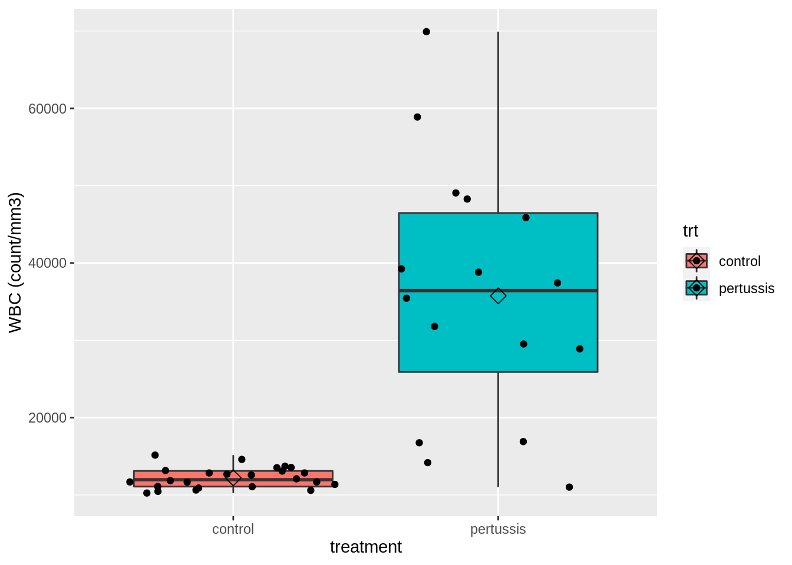

Aim of this exercise
An exploratory data analysis is a crucial step in a data analysis to get insight in the nature and distribution of the data, and to assess the assumptions of the downstream data analysis.
In this exercise you will acquired the skills to conduct a data exploration for a two group comparison in R and to interpret the results.
Background
Researchers wanted to study the immune response on pertussis. They have set up an experiments with 40 rats. 16 rats were infected with pertussis and 24 rats received a control treatment. Researchers measured the white blood cell concentration (WBC) in each rat (count per mm\(^3\).
De data consists of two variables:
Load the libraries
Import the dataset
Data path:
https://raw.githubusercontent.com/statOmics/PSLS21/data/wbcon.csv
wbcon <- read_csv("https://raw.githubusercontent.com/statOmics/PSLS21/data/wbcon.csv")
## Rows: 40 Columns: 2
## ── Column specification ──────────────────────────────────────────────
## Delimiter: ","
## chr (1): trt
## dbl (1): WBC
##
## ℹ Use `spec()` to retrieve the full column specification for this data.
## ℹ Specify the column types or set `show_col_types = FALSE` to quiet this message.
## Rows: 40
## Columns: 2
## $ WBC <dbl> 10252, 10467, 10601, 10638, 10901, 11071, 11092, 11371, …
## $ trt <chr> "control", "control", "control", "control", "control", "…
Aim of the study
The overarching goal of this study was to assess if the white blood cell count changes upon pertussis infection. To this end, researchers randomized 40 rats to two treatments: A control treatment and a treatment in which the rat was infected with pertussis.
We will explore the data to get insight on the impact of the pertussis infection on the white blood cell count.
A secondary goal of the data exploration is to assess assumptions that will be required to use a formal statistical test to assess if the white blood cell count is on average different between infected and control rats (see later exercises).
For this test to be valid, we have to assess following assumptions:
The data in each treatment group are normally distributed.
The data from the two treatment groups has the same variance.
Data visualization
A crucial first step in a data analysis is to visualize and to explore the raw data.
Histogram
First, make a histogram of the data. Fill in the missing parts in the chunk of code below:
wbcon %>%
ggplot() +
geom_histogram(aes(x = WBC, fill = trt), color = "black") +
facet_grid(rows = vars(trt)) +
theme_bw() +
xlab("WBC (count/mm3)")
## `stat_bin()` using `bins = 30`. Pick better value with `binwidth`.

Based on this plot, it seems that the white blood cell counts are higher for rats that were infected with pertussis than for rats that received the control treatment.
Boxplots
However, given the relative small sample size a better option to visualize these data are boxplots. Histograms get useful in larger datasets, 30 observations per group are a bare minimum.
wbcon %>% ggplot(aes(x = trt, y = WBC, fill = trt)) +
geom_boxplot(outlier.shape = NA) +
geom_point(position = "jitter") +
ylab("WBC (count/mm3)") +
xlab("treatment") +
stat_summary(
fun = mean, geom = "point",
shape = 5, size = 3, color = "black"
)

What do you observe?
Both the mean and variance of the data seems to differ between control rats and rats infected with pertussis.
QQ-plots
To assess the assumption that the data are normally distributed in each treatment group, we will use QQ plots.
wbcon %>%
ggplot(aes(sample = WBC)) +
geom_qq() +
geom_qq_line() +
facet_grid(cols = vars(trt))

What do you observe?
The white blood cell counts appear to be normally distributed in both treatment groups.
Descriptive statistics
Here, we will generate some informative descriptive statistics for the dataset.
We first summarize the data and calculate the mean, standard deviation, number of observations and standard error and store the result in an object wbcSum via ’wbcSum<-`
- We pipe the
wbcon dataframe to the group_by function to group the data by treatment groep group_by(trt)
- We pipe the result to the
summarize() function to summarize the “WBC” variable and calculate the mean, standard deviation and the number of observations
- We pipe the result to the
mutate function to make a new variable in the data frame that is named se for which we calculate the standard error (\(\sigma / n\))
wbcSum <- wbcon %>%
group_by(trt) %>%
summarize(
mean = mean(WBC, na.rm = TRUE),
sd = sd(WBC, na.rm = TRUE),
n = n()
) %>%
mutate(se = sd / sqrt(n))
wbcSum
This concludes the data exploration. In the next exercise sessions, we will learn how to formally test if the observed difference in WBC between rats that were infected with pertussis and those receiving the control treatment is statistically significant.
LS0tCnRpdGxlOiAiRXhlcmNpc2UgNC4yOiBFeHBsb3JpbmcgdGhlIHBlcnR1c3NpcyBkYXRhc2V0IgphdXRob3I6ICJMaWV2ZW4gQ2xlbWVudCwgYW5kIE1pbGFuIE1hbGZhaXQiCmRhdGU6ICJzdGF0T21pY3MsIEdoZW50IFVuaXZlcnNpdHkgKGh0dHBzOi8vc3RhdG9taWNzLmdpdGh1Yi5pbykiCi0tLQoKIyBBaW0gb2YgdGhpcyBleGVyY2lzZQoKQW4gZXhwbG9yYXRvcnkgZGF0YSBhbmFseXNpcyBpcyBhIGNydWNpYWwgc3RlcCBpbiBhIGRhdGEgYW5hbHlzaXMgdG8gZ2V0Cmluc2lnaHQgaW4gdGhlIG5hdHVyZSBhbmQgZGlzdHJpYnV0aW9uIG9mIHRoZSBkYXRhLCBhbmQgdG8gYXNzZXNzIHRoZQphc3N1bXB0aW9ucyBvZiB0aGUgZG93bnN0cmVhbSBkYXRhIGFuYWx5c2lzLgoKSW4gdGhpcyBleGVyY2lzZSB5b3Ugd2lsbCBhY3F1aXJlZCB0aGUgc2tpbGxzIHRvIGNvbmR1Y3QgYSBkYXRhIGV4cGxvcmF0aW9uIGZvciBhIHR3byBncm91cCBjb21wYXJpc29uIGluIFIgYW5kIHRvIGludGVycHJldCB0aGUgcmVzdWx0cy4KCiMgQmFja2dyb3VuZAoKUmVzZWFyY2hlcnMgd2FudGVkIHRvIHN0dWR5IHRoZSBpbW11bmUgcmVzcG9uc2Ugb24gcGVydHVzc2lzLgpUaGV5IGhhdmUgc2V0IHVwIGFuIGV4cGVyaW1lbnRzIHdpdGggNDAgcmF0cy4KMTYgcmF0cyB3ZXJlIGluZmVjdGVkIHdpdGggcGVydHVzc2lzIGFuZCAyNCByYXRzIHJlY2VpdmVkIGEgY29udHJvbCB0cmVhdG1lbnQuClJlc2VhcmNoZXJzIG1lYXN1cmVkIHRoZSB3aGl0ZSBibG9vZCBjZWxsIGNvbmNlbnRyYXRpb24gKFdCQykgaW4gZWFjaCByYXQgKGNvdW50IHBlciBtbSReMyQuCgpEZSBkYXRhIGNvbnNpc3RzIG9mIHR3byB2YXJpYWJsZXM6CgotIFdCQzogd2hpdGUgYmxvb2QgY2VsbCBjb3VudCAoY291bnRzL21tJF4zJCkuCi0gdHJ0OiB0cmVhdG1lbnQKCiAgICAtIGNvbnRyb2w6IHJhdCByZWNpZXZlZCBjb250cm9sIHRyZWF0bWVudAogICAgLSBwZXJ0dXNzaXM6IHJhdCB3YXMgaW5mZWN0ZWQgd2l0aCBwZXJ0dXNzaXMKCkxvYWQgdGhlIGxpYnJhcmllcwoKYGBge3IsIG1lc3NhZ2U9RkFMU0UsIHdhcm5pbmc9RkFMU0V9CmxpYnJhcnkodGlkeXZlcnNlKQpgYGAKCiMgSW1wb3J0IHRoZSBkYXRhc2V0CgpEYXRhIHBhdGg6CgogIGBodHRwczovL3Jhdy5naXRodWJ1c2VyY29udGVudC5jb20vc3RhdE9taWNzL1BTTFMyMS9kYXRhL3diY29uLmNzdmAKCgpgYGB7cn0Kd2Jjb24gPC0gcmVhZF9jc3YoImh0dHBzOi8vcmF3LmdpdGh1YnVzZXJjb250ZW50LmNvbS9zdGF0T21pY3MvUFNMUzIxL2RhdGEvd2Jjb24uY3N2IikKYGBgCgpgYGB7cn0KZ2xpbXBzZSh3YmNvbikKYGBgCgojIyBBaW0gb2YgdGhlIHN0dWR5CgpUaGUgb3ZlcmFyY2hpbmcgZ29hbCBvZiB0aGlzIHN0dWR5IHdhcyB0byBhc3Nlc3MgaWYgdGhlIHdoaXRlIGJsb29kIGNlbGwgY291bnQgY2hhbmdlcyB1cG9uIHBlcnR1c3NpcyBpbmZlY3Rpb24uIFRvIHRoaXMgZW5kLCByZXNlYXJjaGVycyByYW5kb21pemVkIDQwIHJhdHMKdG8gdHdvIHRyZWF0bWVudHM6IEEgY29udHJvbCB0cmVhdG1lbnQgYW5kIGEgdHJlYXRtZW50IGluIHdoaWNoIHRoZSByYXQgd2FzIGluZmVjdGVkIHdpdGggcGVydHVzc2lzLgoKV2Ugd2lsbCBleHBsb3JlIHRoZSBkYXRhIHRvIGdldCBpbnNpZ2h0IG9uIHRoZSBpbXBhY3Qgb2YgdGhlIHBlcnR1c3NpcyBpbmZlY3Rpb24gb24gdGhlIHdoaXRlIGJsb29kIGNlbGwgY291bnQuCgpBIHNlY29uZGFyeSBnb2FsIG9mIHRoZSBkYXRhIGV4cGxvcmF0aW9uIGlzIHRvIGFzc2VzcyBhc3N1bXB0aW9ucyB0aGF0IHdpbGwgYmUgcmVxdWlyZWQgdG8gdXNlIGEgZm9ybWFsIHN0YXRpc3RpY2FsIHRlc3QgdG8gYXNzZXNzIGlmIHRoZSB3aGl0ZSBibG9vZCBjZWxsIGNvdW50IGlzIG9uIGF2ZXJhZ2UgZGlmZmVyZW50IGJldHdlZW4gaW5mZWN0ZWQgYW5kIGNvbnRyb2wgcmF0cyAoc2VlIGxhdGVyIGV4ZXJjaXNlcykuCgpGb3IgdGhpcyB0ZXN0IHRvIGJlIHZhbGlkLCB3ZSBoYXZlIHRvIGFzc2VzcyBmb2xsb3dpbmcgYXNzdW1wdGlvbnM6CgoxLiBUaGUgZGF0YSBpbiBlYWNoIHRyZWF0bWVudCBncm91cCBhcmUgbm9ybWFsbHkgZGlzdHJpYnV0ZWQuCgoyLiBUaGUgZGF0YSBmcm9tIHRoZSB0d28gdHJlYXRtZW50IGdyb3VwcyBoYXMgdGhlIHNhbWUgdmFyaWFuY2UuCgoKIyBEYXRhIHZpc3VhbGl6YXRpb24KCkEgY3J1Y2lhbCBmaXJzdCBzdGVwIGluIGEgZGF0YSBhbmFseXNpcyBpcyB0byB2aXN1YWxpemUgYW5kIHRvIGV4cGxvcmUgdGhlIHJhdwpkYXRhLgoKIyMgSGlzdG9ncmFtCgpGaXJzdCwgbWFrZSBhIGhpc3RvZ3JhbSBvZiB0aGUgZGF0YS4gRmlsbCBpbiB0aGUKbWlzc2luZyBwYXJ0cyBpbiB0aGUgY2h1bmsgb2YgY29kZSBiZWxvdzoKCmBgYHtyfQp3YmNvbiAlPiUKICBnZ3Bsb3QoKSArCiAgZ2VvbV9oaXN0b2dyYW0oYWVzKHggPSBXQkMsIGZpbGwgPSB0cnQpLCBjb2xvciA9ICJibGFjayIpICsKICBmYWNldF9ncmlkKHJvd3MgPSB2YXJzKHRydCkpICsKICB0aGVtZV9idygpICsKICB4bGFiKCJXQkMgKGNvdW50L21tMykiKQpgYGAKCkJhc2VkIG9uIHRoaXMgcGxvdCwgaXQgc2VlbXMgdGhhdCB0aGUgd2hpdGUgYmxvb2QgY2VsbCBjb3VudHMKYXJlIGhpZ2hlciBmb3IgcmF0cyB0aGF0IHdlcmUgaW5mZWN0ZWQgd2l0aCBwZXJ0dXNzaXMgdGhhbiBmb3IgcmF0cyB0aGF0IHJlY2VpdmVkIHRoZSBjb250cm9sIHRyZWF0bWVudC4KCiMjIEJveHBsb3RzCgpIb3dldmVyLCBnaXZlbiB0aGUgcmVsYXRpdmUgc21hbGwgc2FtcGxlIHNpemUgYSBiZXR0ZXIgb3B0aW9uIHRvIHZpc3VhbGl6ZSB0aGVzZSBkYXRhIGFyZSBgYm94cGxvdHNgLgpIaXN0b2dyYW1zIGdldCB1c2VmdWwgaW4gbGFyZ2VyIGRhdGFzZXRzLCAgMzAgb2JzZXJ2YXRpb25zIHBlciBncm91cCBhcmUgYSBiYXJlIG1pbmltdW0uCgpgYGB7cn0Kd2Jjb24gJT4lIGdncGxvdChhZXMoeCA9IHRydCwgeSA9IFdCQywgZmlsbCA9IHRydCkpICsKICBnZW9tX2JveHBsb3Qob3V0bGllci5zaGFwZSA9IE5BKSArCiAgZ2VvbV9wb2ludChwb3NpdGlvbiA9ICJqaXR0ZXIiKSArCiAgeWxhYigiV0JDIChjb3VudC9tbTMpIikgKwogIHhsYWIoInRyZWF0bWVudCIpICsKICBzdGF0X3N1bW1hcnkoCiAgICBmdW4gPSBtZWFuLCBnZW9tID0gInBvaW50IiwKICAgIHNoYXBlID0gNSwgc2l6ZSA9IDMsIGNvbG9yID0gImJsYWNrIgogICkKYGBgCgpXaGF0IGRvIHlvdSBvYnNlcnZlPwoKQm90aCB0aGUgbWVhbiBhbmQgdmFyaWFuY2Ugb2YgdGhlIGRhdGEgc2VlbXMgdG8gZGlmZmVyIGJldHdlZW4gY29udHJvbCByYXRzIGFuZCByYXRzIGluZmVjdGVkIHdpdGggcGVydHVzc2lzLgoKIyMgUVEtcGxvdHMKClRvIGFzc2VzcyB0aGUgYXNzdW1wdGlvbiB0aGF0IHRoZSBkYXRhIGFyZSBub3JtYWxseSBkaXN0cmlidXRlZCBpbiBlYWNoIHRyZWF0bWVudCBncm91cCwgd2Ugd2lsbCB1c2UgUVEgcGxvdHMuCgpgYGB7cn0Kd2Jjb24gJT4lCiAgZ2dwbG90KGFlcyhzYW1wbGUgPSBXQkMpKSArCiAgZ2VvbV9xcSgpICsKICBnZW9tX3FxX2xpbmUoKSArCiAgZmFjZXRfZ3JpZChjb2xzID0gdmFycyh0cnQpKQpgYGAKCldoYXQgZG8geW91IG9ic2VydmU/CgpUaGUgd2hpdGUgYmxvb2QgY2VsbCBjb3VudHMgYXBwZWFyIHRvIGJlIG5vcm1hbGx5IGRpc3RyaWJ1dGVkIGluIGJvdGggdHJlYXRtZW50IGdyb3Vwcy4KCiMgRGVzY3JpcHRpdmUgc3RhdGlzdGljcwoKSGVyZSwgd2Ugd2lsbCBnZW5lcmF0ZSBzb21lIGluZm9ybWF0aXZlIGRlc2NyaXB0aXZlIHN0YXRpc3RpY3MKZm9yIHRoZSBkYXRhc2V0LgoKV2UgZmlyc3Qgc3VtbWFyaXplIHRoZSBkYXRhIGFuZCBjYWxjdWxhdGUgdGhlIG1lYW4sIHN0YW5kYXJkCmRldmlhdGlvbiwgbnVtYmVyIG9mIG9ic2VydmF0aW9ucyBhbmQgc3RhbmRhcmQgZXJyb3IgYW5kIHN0b3JlIHRoZQpyZXN1bHQgaW4gYW4gb2JqZWN0IHdiY1N1bSB2aWEgJ3diY1N1bTwtYAoKMS4gV2UgcGlwZSB0aGUgYHdiY29uYCBkYXRhZnJhbWUgdG8gdGhlIGdyb3VwX2J5IGZ1bmN0aW9uIHRvIGdyb3VwCnRoZSBkYXRhIGJ5IHRyZWF0bWVudCBncm9lcCBgZ3JvdXBfYnkodHJ0KWAKMi4gV2UgcGlwZSB0aGUgcmVzdWx0IHRvIHRoZSBgc3VtbWFyaXplKClgIGZ1bmN0aW9uIHRvIHN1bW1hcml6ZQp0aGUgIldCQyIgdmFyaWFibGUgYW5kIGNhbGN1bGF0ZSB0aGUgbWVhbiwgc3RhbmRhcmQgZGV2aWF0aW9uIGFuZAp0aGUgbnVtYmVyIG9mIG9ic2VydmF0aW9ucwozLiBXZSBwaXBlIHRoZSByZXN1bHQgdG8gdGhlIGBtdXRhdGVgIGZ1bmN0aW9uIHRvIG1ha2UgYSBuZXcKdmFyaWFibGUgaW4gdGhlIGRhdGEgZnJhbWUgdGhhdCBpcyBuYW1lZCBgc2VgIGZvciB3aGljaCB3ZSBjYWxjdWxhdGUgdGhlCnN0YW5kYXJkIGVycm9yICgkXHNpZ21hIC8gbiQpCgpgYGB7cn0Kd2JjU3VtIDwtIHdiY29uICU+JQogIGdyb3VwX2J5KHRydCkgJT4lCiAgc3VtbWFyaXplKAogICAgICBtZWFuID0gbWVhbihXQkMsIG5hLnJtID0gVFJVRSksCiAgICAgIHNkID0gc2QoV0JDLCBuYS5ybSA9IFRSVUUpLAogICAgICBuID0gbigpCiAgKSAlPiUKICBtdXRhdGUoc2UgPSBzZCAvIHNxcnQobikpCndiY1N1bQpgYGAKCgpUaGlzIGNvbmNsdWRlcyB0aGUgZGF0YSBleHBsb3JhdGlvbi4gSW4gdGhlIG5leHQgZXhlcmNpc2Ugc2Vzc2lvbnMsIHdlIHdpbGwgbGVhcm4gaG93IHRvIGZvcm1hbGx5CnRlc3QgaWYgdGhlIG9ic2VydmVkIGRpZmZlcmVuY2UgaW4gV0JDIGJldHdlZW4gcmF0cyB0aGF0IHdlcmUgaW5mZWN0ZWQgd2l0aCBwZXJ0dXNzaXMgYW5kIHRob3NlIHJlY2VpdmluZyB0aGUgY29udHJvbCB0cmVhdG1lbnQgaXMgKipzdGF0aXN0aWNhbGx5IHNpZ25pZmljYW50KiouCg==